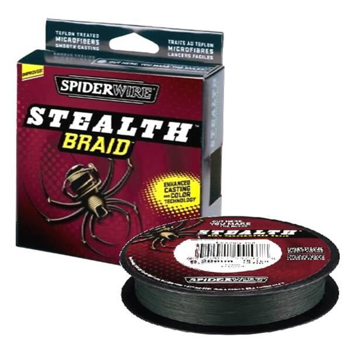

SpiderWire Stealth Braid
Diameter chart, reel capacity & backing guide

This guide covers the Stealth Braid packages listed by Pure Fishing Japan in 2016: 50 and 65 lb Moss Green on 125-yard spools. Their listed diameters are .419 and .447 mm. These are older, region-specific specifications; check your package before using them for newer US Stealth line.
- Construction
- Dyneema PE braid with manufacturer-described Teflon treatment
- Listed strengths
- 50-65 lb
- Line type
- Braid main line
A heavy-cover plan with a clearly identified diameter basis
The Japanese manufacturer positioned this Stealth listing for punching, pitching and other cover work. Use those applications as context, then check your own rod, reel and line rating. The published actual-mm basis can produce less estimated capacity than a thinner advertised number elsewhere. That is a source-basis difference to preserve, not a calculation to repair by borrowing another chart.
How much Stealth Braid will fit?
Calculated estimates, not measured fills. Stop at the reel manufacturer's fill level even if some line remains.
SpiderWire Stealth Braid diameter chart
2016-launch Japan listing of US-labeled Moss Green imports ONLY. Physical diameters: 50 lb .419 mm, 65 lb .447 mm; exact 125-yard product codes 1339729/1339730. Inches are conversions. Do not merge these regional actual-mm values with current US advertised diameters, other colors or the unmapped 300-yard mention.
| Strength | Inches | mm | Spools (yd) |
|---|---|---|---|
| 0.016496 | 0.419 | 125 | |
| 0.017598 | 0.447 | 125 |
Choosing your Stealth Braid strength
Only 50 and 65 lb have physical diameters in this source. Lower-test product codes on the same page do not establish lower-test diameter rows.
The .419 mm 50 lb and .447 mm 65 lb inputs must remain paired with their own labels and IDs. Do not use a mono-equivalent test as an inch or mm measurement.
Both reviewed product codes are 125-yard Moss Green packages. The prose also mentions 300 yards, but it does not provide the strength-specific mapping used here.
ReelCalc did not measure this braid or perform abrasion/casting tests. Actual-diameter terminology is the Japanese manufacturer's source wording, not an independent laboratory measurement.
Want a guided recommendation?
Continue in the Setup WizardSame pound test, different diameters
At your selected strength
Loading diameter comparisons...
What changes with another line?
Nearby diameters in the line database
| Line | Strength | Inches | Difference |
|---|---|---|---|
| Loading line database... | |||
Backing, working line & leaders
Identify the historical import
Compare the package with the 2016 Japan-listed SS50G-125 or SS65G-125 product code. The original red Stealth Braid artwork is shown; a newer green US package needs its own diameter verification.
Allow for the actual-mm basis
These published diameters are comparatively large capacity inputs. Confirm that the chosen working section plus reserve fits your reel instead of assuming a typical 50 or 65 lb braid fill.
Secure the spool connection
Use the reel maker's instructions for braid attachment. Where required, start with monofilament backing to prevent spool slip; its diameter also affects the amount needed.
Keep the connection below the cast
Size the working section for cast length and reserve, wind firmly and evenly, and stop at the reel's specified clearance. The 125-yard package is not a promise that the whole package fits every reel.
How Much Fits on These Reels?
Estimated full-spool capacity for the Stealth Braid strength selected above, with no backing. These are calculated examples, not physical tests or recommendations for every pairing.
Loading capacity estimates...
Stealth Braid questions, answered
Why are these diameters larger than some Stealth charts?
This page preserves the Japanese manufacturer's standard actual-mm specification for its 2016-launch imports. It does not substitute or merge a different advertised diameter basis. No independent measurement or equivalence is claimed.
Can I use this chart for current US Stealth?
Not without confirming the exact formulation, product code and diameter basis. The current US feed has different product codes and does not provide physical diameters establishing continuity.
Why are only 50 and 65 lb included?
They are the only strengths with stated physical diameters on the reviewed Japanese page. Lower-test product code names and mono-equivalent labels are not enough to calculate diameter.
Why is 300 yards not offered in the chart?
The page mentions 300-yard packages in general prose, but the reviewed 50/65 lb table rows identify 125-yard product codes. This guide does not infer the missing strength/package combination.
Is the red artwork current packaging?
It is original artwork linked by the 2016-launch Japan listing. It illustrates that historical product family and is not presented as a current-stock or current-US packaging claim.
Specifications & sources
Checked September 13, 2026 from the manufacturer's Japan product page, which states a late-April 2016 launch, US pound/yard labeling, standard actual diameters and exact package listings. Original red package art was retrieved unchanged from that page. The current US feed has different product codes and supplies no physical diameters, so no current equivalence is claimed.
Calculations use the catalog's listed inch diameters. Published inch and millimeter values may differ slightly because of rounding.
- 2016-launch Japan manufacturer specifications Sole numeric authority: actual-mm statements plus 50/65 lb 125-yard package listings.
- Original Japan-listing Stealth artwork Unmodified original red package and Moss Green spool image.
- Current US public feed, not diameter authority Newly retrieved exact package product codes; no physical diameters or historical-formulation equivalence established.